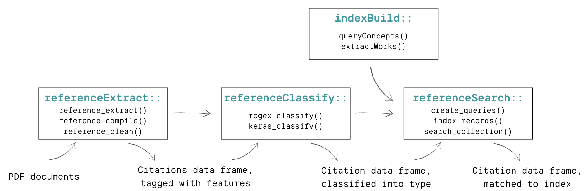

govscienceuseR for Groundwater Sustainable Plans
knitr::opts_chunk$set(warning = F, message = F)Introduction
Understanding the policy that goes into science is important… Sarewitz Cairney
However, it can be a tedious task… Koontz looks in depth at 12 plans, 1,104 references across them, but these include all kinds of sources: scholarly, articles, organizations, agencies at different levels, etc. Desmaris and Herd (2014) 102 Regulatory Impact Assessments, describing 1,378 scholarly citations, and though recognizing the significant presence of non-scholarly citations, they do not anylze those
Method
This is vignette walking through the steps of the packages in the
govscienceuseR tool set: referenceExtract,
referenceClassify, indexBuild, and
referenceSearch. Together, these four packages allow
researchers to go from PDF documents to a data frame of indexed
citations in only a handful of steps. The goal of these tools is to
allow researchers working with various types of policy documents to
analyze citations using a systematic and reproducible approach.
The case
Sustainable Groundwater Management Act… The data we’ll be using are documents for California’s Groundwater Sustainability Plans. These documents are Groundwater Sustainability Agency-level plans, developed in response to the state’s Sustainable Ground Management Act. Passed in 2014, SGMA has required that GSAs (‘Agencies’) develop plans to meeting various sustainability goals for groundwater, including… As such, these documents provide a useful case for evaluating the use of science in policy, as there are a variety of…
Getting started
Installations
Let’s get started by downloading all four packages from the
govscienceuseR GitHub page and loading them into our library. All of the
dependent packages required should be imported when we load in these
packages. You may be prompted to install some of the dependent packages
if you do not already have them, such as keras.
devtools::install_github("govscienceuseR/referenceExtract")
devtools::install_github("govscienceuseR/referenceClassify")
devtools::install_github("govscienceuseR/referenceBuild")
devtools::install_github("govscienceuseR/citationSearch")
library(referenceExtract)
library(referenceClassify)
library(referenceBuild)
library(citationSearch)
packs = c('data.table', 'dplyr', 'stringr', 'keras', 'tensorflow',
'tidyr', 'purrr', 'ggplot2')
sapply(packs, require, character.only = T)You’ll also need to install solr
In your command line/terminal, navigate to your solr download, then start a cloud instance by ..
path/to/solr.9.0.1/bin/solr start -cData
The data we’ll be using are documents for California’s Groundwater Sustainability Plans. These documents are available publicly to download from Box. Feel free to download them to your computer to a file that will be considered your document directory. There are 114 plans, which total X pages. We will set our document directory to this folder of PDFs.
doc_directory <- "~/Box/reference_classifier/documents_gsp/"pdfinfo <- lapply(list.files(doc_directory, full.names = T),
pdftools::pdf_info)
pdfs <- data.frame(do.call('rbind', pdfinfo))
pages <- sum(as.numeric(pdfs$pages))
pages/nrow(pdfs)Using these GSP documents we’ll be walking through the following steps of the process:

1. referenceExtract
The referenceExtract tool from govscienceuseR is designed to take unstructured PDF documents, feed them through the anystyle.io citation extraction software, and return tagged citation data in a tabular format.
The first step of extracting references is to input PDF documents
into the reference_extract function. This function reads in
every PDF in the document directory (doc_dir), and runs them through
anystyle.io. Anystyle extracts probable citations and exports them to
the reference directory (ref_dir) as JSON files. Depending on the number
and size of files, this can take some time. For example, these documents
took over an hour to extract.
ref_directory <- "data/ref_dir"
reference_extract(doc_dir = doc_directory,
ref_dir = ref_directory,
layout = "none")After extractions we have a JSON file for each PDF document.
Next, the reference_compile function transforms those
JSONs to tabular data and compiles them all into one data table, adding
the file name as an identifier.
dt <- reference_compile(ref_directory)After these first two steps we can take a look at our probable citations from Anystyle. There are 26528 probable citations across these 114 documents.
It is noticeable above that the data provided by Anystyle has its challenges for further analysis. The first is a structural: authors are nested into a matrix, some rows have listed values, etc., all of which make the data hard to analyze. The second is a quality challenge, whereby many of the probable citations are not sensible. While many look correct, others look liek they have been smashed together into one observation, or they look like false positives: no citations at all.
For example, here is what looks like two probable citations combined into one observation:
unnest(dt[204, c(2,3)])## # A tibble: 3 × 2
## date title
## <chr> <chr>
## 1 2017 Long‐Term Socio‐Economic Forecasts by County: Kings County
## 2 2015 Progress Report: Subsidence in the Central Valley, California. For Depa…
## 3 2009 Ground‐water availability in California’s Central ValleyAnd he is what looks like false positive, which are often things like addresses:
unlist(dt[148, c(1,3,5)])## author.family
## "When"
## author.given
## "Firebaugh"
## title
## "5:00 - 7:00 PM Firebaugh Middle School MPR 1600 16th Street, Firebaugh, CA Los Banos – Wednesday"
## container-title1
## "PM College Greens Building 1815 Scripps Drive"
## container-title2
## "PM Hammon Senior Center 1033 W. Las Palmas Avenue"
## container-title3
## "Monday"To try to address the challenges in these probable citations, the
reference_clean function goes through a series of steps.
For each column the function unlists the data and filters out unlikely
candidates for that column. For instance, if a number listed in the date
column does not match any reasonable date format or expectation, it is
removed. If a string in the URL column actually resembles a DOI, it is
moved to that column. And so on. Furthermore, if there seem to be
multiple citations listed in one row that can be broken apart in
parallel across all of the columns, we unnest these rows. (Note:
depending on the size of the files this function may take some time.
Cleaning these 26528 citations takes about 18 minutes)
dt <- reference_clean(dt)This cleaning process has changed probable citations now a bit. Some of the probable citations have been unnested (and therefore expanded) while others have been removed, leaving us with 14423 probable citations.
2. referenceClassify
The referenceClassify package is designed to take a data
frame of tabular, tagged citation data (author, year, container,
publisher, doi, etc), look for exact matches between those tags and
various high-level indices (mainly journal and agency names), and begin
to classify probable citations into these high-level categories.
Based on our initial cleaning of the GSP data in the previous
section, we can see which of these probable citations are exact matches
to three different indices: an index of academic journals from the
Scimago database, an index of academic conference papers/proceedings
also from the Scimago database, and an index of US state and federal
agencies, curated by the package authors. We can look for matches using
the journal_match(), conference_match() and
agency_match() functions.
table(journal_match(dt$container))##
## FALSE TRUE
## 13543 880table(conference_match(dt$container))##
## FALSE TRUE
## 14420 3table(agency_match(dt$container, dt$author))##
## FALSE TRUE
## 13967 456After this initial assessment, we can further clean and refine these
potential citations with the prepared_by function, which
removes commonly-seen lead-ins to references (‘prepared for/by’, etc.)
to improve exact matching.
dt <- prepared_by(dt, x = 'container', y = 'author', z = 'publisher')Next, we disambiguate the journals with the
journal_disambig function, which references indices of
common journal abbreviations and through manual cleaning of journals
referenced in transportation documents.
dt$container <- journal_disambig(dt$container)Third, we use regular expressions to look at our cleaned data and
classify it based on exact matches with regular expressions using the
regex_classify() function. This function does two things.
First it looks across all of the columns for exact matches to our
indices, and if there is an exact match, it pulls out that value into a
‘input’ column. If there is not exact match, the value in the input
column will be selected in the following order of preference: doi,
container, publisher, title, author. Second, based on the matches the
function will assign the potential citation into one of four classes:
journal, agency, conference, or none. If none of the potential
citations’ data is an exact match to any of the indices, the
classification is NA.
dt <- regex_classify(dt, 'container')Based on these classifications, we can see the counts of exact matches:
table(dt$class)##
## agency conference journal remove_row
## 1867 3 997 146However, we can see that many of the probable citations have been left unmatched:
table(is.na(dt$class))##
## FALSE TRUE
## 3013 10899Next we want to classify the probable references that are not exact matches to any of our indices. To do this, we input our unclassified references into a neural network trained to predict the reference class of probable citations. We used data from Environmental Impact Statements, classified through both manual classification and the semi-automated regex classification explained above. This model is X% effective on EIS data…
We can run this model on the whole data frame, and compare our regex classification with the Keras classifications to get a sense of the model performance.
# Need to set this wd right now because I can't actually get the model object to save within the package itself
setwd("~/Documents/Davis/R-Projects/referenceClassify/")
# Something is wrong with the auto_input
predictions <- keras_classify(dt, probability = .85,
'container', auto_input = F,
'training_input')
dt <- cbind(dt, select(predictions, predict_class))dt <- dt %>%
mutate(class = case_when(
class == "remove_row" ~ "delete",
T ~ class),
method = case_when(
is.na(class) ~ "keras",
T ~ "regex"),
method_comparison = case_when(
method == "regex" & class == predict_class ~ "match",
method == "regex" & predict_class == "unsure" ~ "unsure",
method == "regex" & class != predict_class ~ "incorrect",
T ~ NA_character_))
table(dt$method_comparison)##
## incorrect match unsure
## 30 2801 182These results, altogether, suggest that the Keras model is 93% accurate in its prediction of the citations we are able to do exact matching for.
Now, let’s unify the classification columns and have a look at the total for each estimated grouping.
dt$class <- ifelse(is.na(dt$class), dt$predict_class, dt$class)
table(dt$class)##
## agency conference delete journal unsure
## 3675 5 3163 1856 5213And we’ll tidy up these data by filtering out the citations classificied to ‘delete’ (the false positives) in preparation for our indexing in the next step.
dt <- dt %>%
select(-c(predict_class, method_comparison)) %>%
filter(class != "delete")What are we left with? We can take a look at the journals and agencies:
I NEED TO ACTUALLY MATCH THE AGENCY

3. indexBuild
Now that we have a general sense of what kind of citation types are represented within the probable citations, the next step is to try to index these citations exactly.
First we need to generate an index. The indexBuild function wraps around the OpenAlex API
First, what are the areas we already have known references from? We koad in the Scimago database, including journal metdata, to get an understanding of what journals can be identified through exact matching.
themes <- dt_journals %>%
select(sourceid, journal_title, cat1:cat15) %>%
pivot_longer(cols = cat1:cat15,
names_to = "number",
values_to = "cat") %>%
filter(!is.na(cat)) %>%
mutate(cat = trimws(str_remove_all(cat, '\\(Q\\d\\)'))) %>%
mutate(cat = trimws(str_remove_all(tolower(cat),
'\\(miscellaneous\\)|,|-'))) %>%
group_by(cat) %>%
count() %>%
arrange(n) %>%
mutate(cat = factor(cat, levels = .$cat))
Let’s use these themes and keywords to inform our index creation. I build in a quick bit of sleep time for querying the concepts from openAlex, then apply this functions across all of the themes and keywords existing in the data. (Note: This querying of over 200 concepts takes ~5 minutes.)
query_slowly <- function(x){
index <- queryConcepts(concept_string = x,
per_page = 50)
return(index)
Sys.sleep(1)
}
index <- lapply(c(themes$cat, keywords$word), query_slowly)
# For whatever reason there was no description column for 7
index[[12]]$description <- ""
indexdf <- do.call('rbind', index) %>% unique()Now we have a number of resources representing the concepts from our existing data. Here is a random look at some of them.
What we end up is a list of concepts, related to which are different ‘works’, or specific citations. We can extract the works from those concepts below. I currently break this into two extraction rounds, small and large, because they need to be handled differently. This extraction c
smallworks <- filter(indexdf, works_count < 1000000)
for(i in 52:nrow(smallworks)){
sapply(smallworks$id[i], FUN = function(x){
extractWorks(mailto = "belwood@ucdavis.edu",
concept_page = x,
dest_file = paste0("~/Box/govscienceuseR/openalex_index_gsp/",
stringr::str_extract(x,'[A-Za-z0-9]+$'),
"_2000_2020", ".json.gz"),
per_page = 200, # must be between 1 and 200
to_date = 2022,
from_date = 2000,
sleep_time = 0.5)
})
}largeworks <- filter(indexdf, works_count >= 1000000)
for(i in 1:nrow(largeworks)){
for(j in 2000:2022){
sapply(largeworks$id[i], FUN = function(x){
extractWorks(mailto = "belwood@ucdavis.edu",
concept_page = x,
dest_file = paste0("~/Box/govscienceuseR/openalex_index_gsp/",
stringr::str_extract(x,'[A-Za-z0-9]+$'),
"_", j, ".json.gz"),
per_page = 100,
to_date = j,
from_date = j,
sleep_time = 0.5)
})
}
}jsons <- list.files("~/Box/govscienceuseR/openalex_index_gsp/", full.names = T)
# Anything that is 23 is empty
jsons <- jsons[file.size(jsons) > 23]
records <- lapply(jsons, works2dt)
recordsdf <- do.call("rbind", records)We’ve generated quite a wide database, including 1388002 records in our index. However, this likely leaves out edge cases, and we are developing ways to develop broader indices.
4. referenceSearch
Now we have our probable citations and their groupings, we have an index to match them to, and now we want to probabilistically match them.
Let’s isolate our probable citations that would likely map onto our index of academic reference.
dt_solr <- dt %>%
filter(class == "journal") %>%
select(title, author, year, publisher, container,
doi) %>%
rename("journal_title" = container,
"authors" = author) %>%
mutate(year = as.numeric(year))
queries <- create_queries(dt_solr)This is where you’ll need your Solr instance running. In my terminal,
I am navigating to where Solr is housed, navigating to bin/solr and
starting a cloud instance with the command start -c.
~/Applications/solr-9.1.0/bin/solr start -c## *** [WARN] *** Your open file limit is currently 12800.
## It should be set to 65000 to avoid operational disruption.
## If you no longer wish to see this warning, set SOLR_ULIMIT_CHECKS to false in your profile or solr.in.sh
## *** [WARN] *** Your Max Processes Limit is currently 2784.
## It should be set to 65000 to avoid operational disruption.
## If you no longer wish to see this warning, set SOLR_ULIMIT_CHECKS to false in your profile or solr.in.sh
## Waiting up to 180 seconds to see Solr running on port 8983 [|] [/] [-] [\] [|] [/] [-] [\] [|] [/] [-] [\] [|] [/] [-] [\] [|] [/] [-] [\] [|]
## Started Solr server on port 8983 (pid=8123). Happy searching!
##
## #records <- "~/Box/govscienceuseR/openalex_index_gsp/"
colnames(recordsdf)[c(1,2,3,5,7,8,10,12)] <- c("source", "title", "doi",
"year", "miscid",
"journal_title",
"publisher", "authors")index_records(recordsdf, collection_name = "gsp_index", overwrite = T)This does not run, I get ” Error: 400 - undefined field year ”
results <- search_collection(q = queries[3],
collection_name = "WOS_demo",
topn = 3)Waiting to run then, then
results = list()
count = 1
for (q in queries[1:10]) {
res = search_collection(q, collection_name = "gsp_index")
res$id = count
res$q = q
results[[count]] = res
count = count + 1
}
results_df = do.call(dplyr::bind_rows, results)Close out your Solr instance in the terminal:
~/Applications/solr-9.1.0/bin/solr stop## Sending stop command to Solr running on port 8983 ... waiting up to 180 seconds to allow Jetty process 8123 to stop gracefully.
## [|] [/] [-] [\]